Sky is not the limit
An international event organised by youth, for youth. Where inspiration flows in a full circle.
SKY Conference is an international event organised by youth and for youth. What started as a bold idea has grown into a safe space where teenagers and young adults from different countries and backgrounds come together to inspire one another.
SKY connects students, educators, scientists, artists, and changemakers who are not afraid to cross boundaries and challenge the status quo. Our events combine inspiring keynote talks with interactive workshops.
At SKY Conference, we believe in a full circle of inspiration, where it does not come only from speakers on stage, but from everyone involved. Participants, volunteers, speakers, and organisers all play an equally important role.
Empower young people to believe in their own power — to show our generation that despite our young age we have influence on the surrounding world.
Highlight the importance of continuously seeking new knowledge, possibilities, personal development and openness to changes.
Encourage participants to step beyond their comfort zones, take on new challenges, and turn ideas into action.
Build confidence, responsibility, and a sense of purpose — so the next generation feels ready not just to dream, but to act.
On 14th May, we organised the first edition of SKY Conference in the well-known European Solidarity Centre in Gdańsk. All of our speakers showed us how they understand 'beyond' through their prism. It was a day full of emotions — we all learnt, laughed and enjoyed this day!


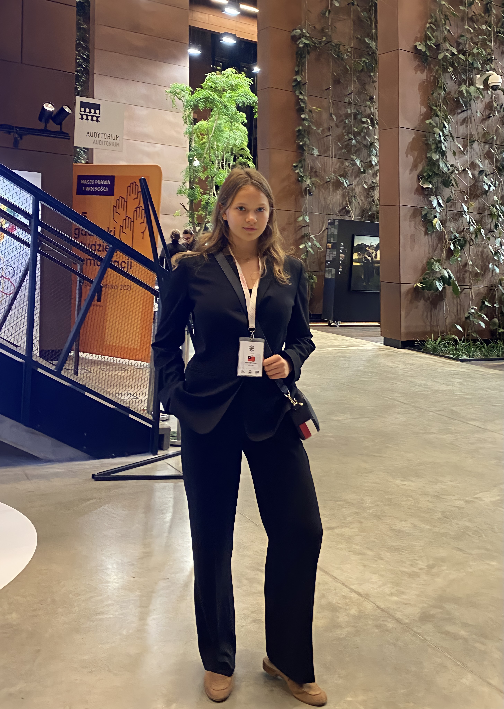
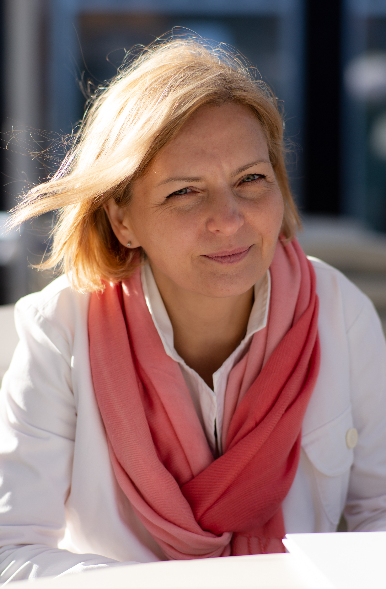
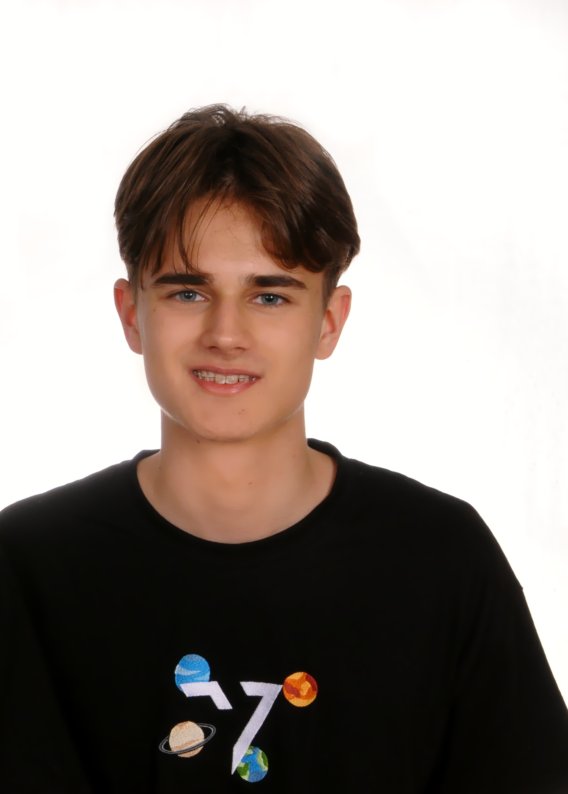
SKY Conference united people again in an iconic cinema in Wrocław. We all took a look at gratitude — which was the topic of the conference. One more time, we had a chance to seek new knowledge, possibilities of growth and inspire one another.
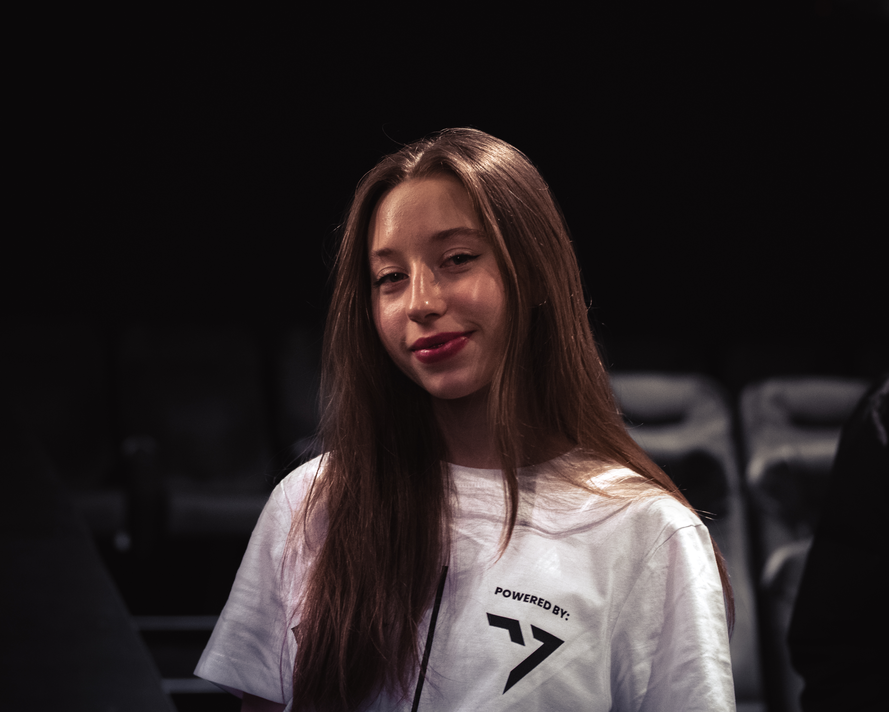


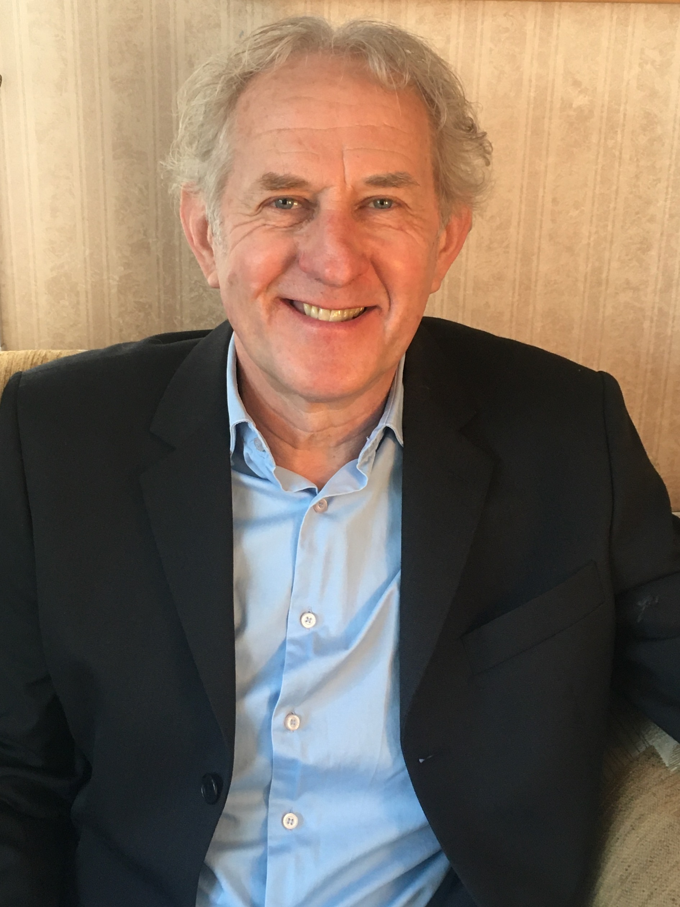
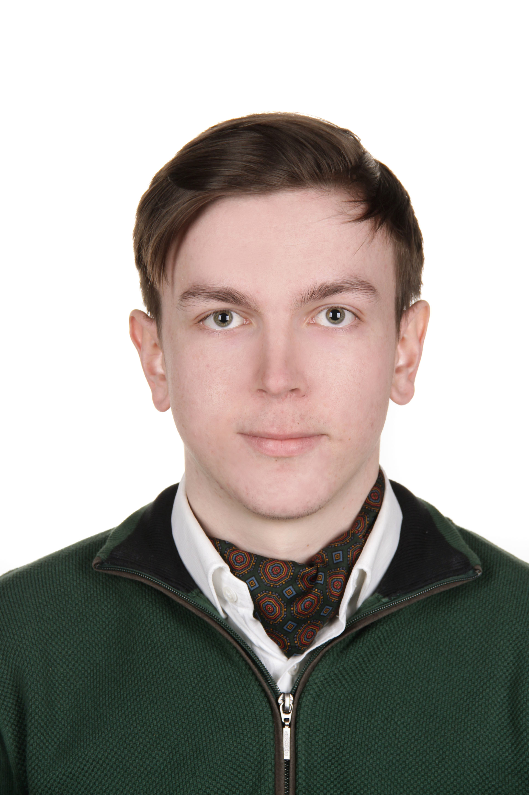
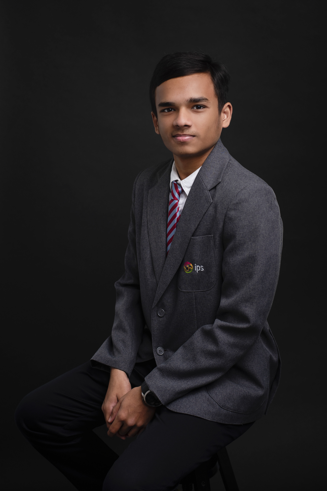
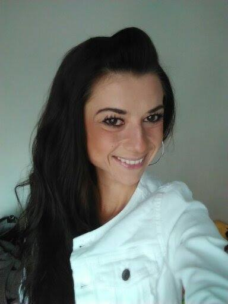
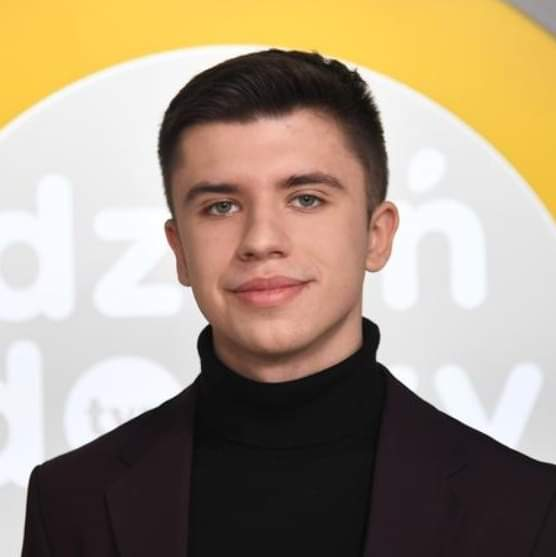
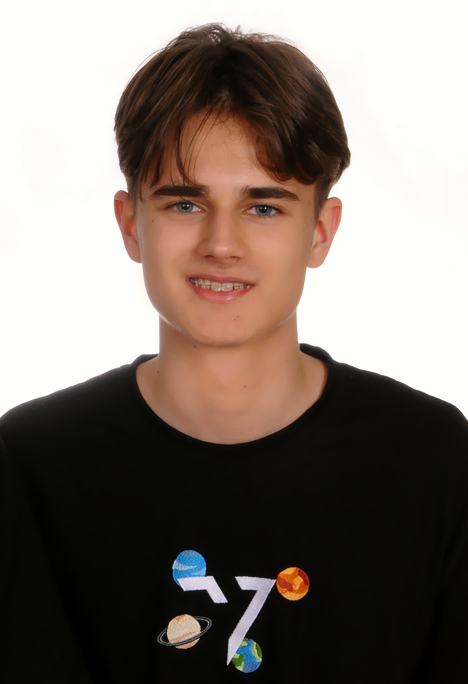
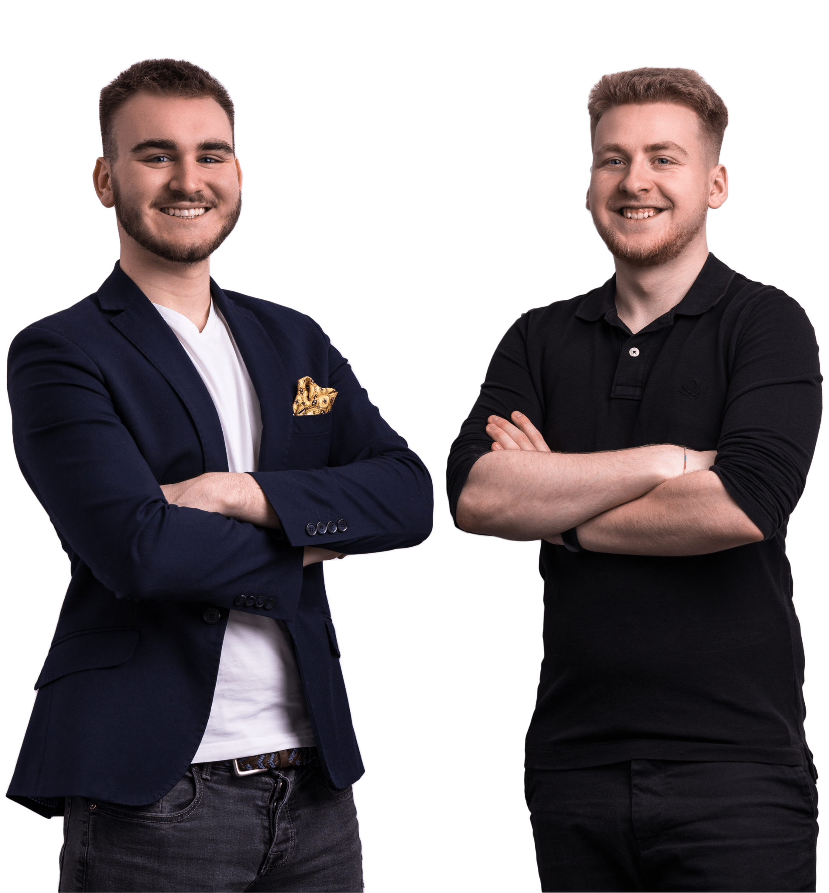
 INVSBL Family
INVSBL Family
Choose how you want to contribute to the next SKY Conference

Share your knowledge, experience, and story with hundreds of young minds eager to learn and be inspired.

Join us for an unforgettable experience filled with inspiration, learning, and meaningful connections.

Become part of the team behind the magic. Help us create an incredible experience for everyone.
See how SKY Conference has been featured in news and media
Watch the highlights and hear from participants about their SKY experience.
The visionaries who turned a bold idea into reality

TEDx speaker, world championship dancer, and 2023 Wrocław Citizen of the Year. Founder of Never Too Soon foundation.
Click to read full bio →
FLEX scholarship recipient, psychology enthusiast, and UNICEF V4 Well-being project co-author.
Click to read full bio →Julia Mia Smuczynska was also an initiator and co-organised the first edition of SKY Conference in 2022.
Have questions? Want to partner with us? We'd love to hear from you!
Over the past editions, SKY Conference has hosted incredible speakers who shared their knowledge, passion, and stories. From scientists and artists to entrepreneurs and changemakers – our speakers embody the spirit of going beyond limits.
Kasia began gaining experience from a very young age. She started her journey with public speaking at the age of six, when she delivered a talk for 300 children aged 6–12. Since then, she has been frequently invited as a speaker to conferences, events, and the media.
One of her most important appearances was a TEDx talk in Leipzig, Germany, in 2020, where she presented the lecture "Polish Children's Academy – how do we break boundaries." She also served as the spokesperson for this project, becoming the youngest spokesperson in Poland.
She has been dancing for 15 years, during which time she has won numerous awards, including medals at world championships. Through dance, she learned teamwork, how to support peers during moments of failure, and how to celebrate victories together while showing respect for other participants.
In 2023, Katarzyna was awarded the title Wrocław Citizen of the Year. She won in the category Youth – The Strength of Youth. At the time, she was 17 years old, making her the youngest recipient in the history of this distinction.
For the past two years, she has been conducting workshops for company management boards as well as for primary and secondary school students, focusing on soft skills, self-presentation and team work.
During spring 2025 she created her own foundation Never Too Soon, which aims to support, empower, and enhance the personal growth of her peers. Her NGO also cooperates with other international organisations during Erasmus+ projects. Besides working on international projects as Never Too Soon foundation, she also coordinates Erasmus+ projects as part of her NGO work with the Era Psyche Foundation.
She is a student of Global Arts, Culture & Politics at the prestigious University of Amsterdam.
Zuzia has been passionate about psychology since childhood. She loves taking new initiatives and working for the benefit of the community, especially in the area of well-being.
She is a scholarship recipient of the FLEX program (Future Leaders Exchange Program), a finalist and ambassador of OFF (Our Future Foundation), and a two-time award recipient of the "Zdolni z Pomorza" program.
She completed Laurie Santos's course for psychology students at Yale. She is a co-author and ambassador of the project Well-being (Dobrostan) – First Aid within UNICEF V4.
Additionally, she participated in three international Erasmus+ projects: ECA, CAPS, and PAPUS.
Since 2011, she has been involved in the Polish Children's Academy (Polska Akademia Dzieci) project, giving lectures and volunteering.
The first edition of SKY Conference explored what it means to go "Beyond" — beyond limits, beyond expectations, beyond the ordinary. Our speakers shared their journeys of pushing boundaries in science, education, medicine, and personal growth.
Head of backward planetary protection at NASA's Mars Sample Return mission and chief engineer of the EXCLAIM mission.
Giuseppe Cataldo is the head of backward planetary protection of the Mars Sample Return (MSR) Capture, Containment & Return System, as well as the chief engineer of NASA's EXCLAIM mission and the near-infrared camera NASA is contributing to the PRIME telescope.
His expertise is in the design, testing and management of space systems, gained through 10+ years at NASA and earning his doctorate at the Massachusetts Institute of Technology (MIT). He has contributed to JWST, ATLAST (now LUVOIR), OSIRIS-REx, and Micro-X missions.
NASA researcher focusing on precision imaging systems for astrophysics and cosmology.
Dr. Wollack's research concentrates on the development and use of precision imaging systems for astrophysics and cosmology. He has contributed to the design, fabrication, and characterization of sensors, waveguide structures, optics, and other components for ground, balloon, and space-based applications.
Research areas: Cosmic Microwave Background (spectrum, anisotropy, polarization, dark energy), Astrophysical Observations, and Instrumentation.
Co-founder of Drumduan School with Tilda Swinton, educator and speaker on educational renewal.
Born in England to Polish parents, Krzysztof has lived in the Highlands of Scotland for over 35 years. In 2015, he opened a successful independent high school with actress Tilda Swinton which drew attention from the Scottish government.
He was invited to the Queen's Garden Party and has given talks on educational renewal in New Zealand, India, Mexico, Taiwan, and around Europe. Apart from being a headteacher, he specializes in making clay pizza ovens, Canadian canoes, and hand-forged knives with students.
Astronomer and ESA Space Ambassador, astronomy education specialist at Hevelianum.
An astronomer by education, involved in space education for many years. Currently an astronomy education specialist at Gdańsk science center Hevelianum and originator of the nationwide astronautics competition "W stronę gwiazd."
Since 2017, a Space Ambassador for the European Space Agency (ESA) Education Office, promoting careers in the space sector. Regular publisher of articles on astronomy and outer space.
Honorary NASA employee, neuroarchitecture specialist, innovator of patented projects.
Honorary NASA employee, specialist in neuroarchitecture, scientist, artist, designer, and hot air balloon pilot. Creator of the Vinci Power Nap® technology system. Awarded Grand Prix 2002 from the President of Poland for best diploma project.
Author of global projects and discoveries focusing on health, environment, education, innovation, and space missions. Her goal is to help save millions of lives and improve wellbeing across the globe and beyond.
Philosopher and political scientist, Director's Representative for Academic Affairs at ECS.
A philosopher and political scientist, studied at Adam Mickiewicz University in Poznań and Humboldt University of Berlin. Earned PhD in social philosophy at the Free University of Berlin.
Research interests include contemporary social and political theory, hermeneutics, philosophical anthropology, and phenomenology. Lectures at the Academy of Fine Arts in Gdańsk and College of Artes Liberales at University of Warsaw.
14-year-old TEDx speaker from Leipzig, interested in geopolitics and nuclear energy.
Student at Gdynia Social School, interested in football, geopolitics, and nuclear power plants. Delivered several lectures for Gdańsk University of Technology and Medical University of Gdańsk as part of the PAD program. TEDx speaker in Leipzig.
15-year-old public speaking champion, volunteer at European Solidarity Centre.
At 15 years old, she has been intensively developing public speaking skills, winning regional and national contests. Long-time volunteer at the European Solidarity Centre. Interested in language learning, business, and traveling.
Pediatrician and founder of Park On Association for people with Parkinson's disease.
Graduate of Medical Academy in Gdańsk, worked as a pediatrician for over 30 years. After being diagnosed with Parkinson's disease, established the Park On Association in 2019 for people with Parkinson's and their caregivers.
The association offers free art therapy, physical exercise, Tai Chi, and psychological workshops. Organized Poland's first Dance for PD course with David Leventhal from New York.
Teen entrepreneurs who founded Poland's largest fashion-focused Facebook group.
Filip Tłustochowicz (17) and Jan Hofman (16) are interested in economics, business, and online communities. Three years ago, they founded one of Poland's largest fashion-focused Facebook groups.
Also interested in cryptocurrencies and NFTs, they launched a clothing brand which they presented at the conference.
The second edition brought together world-renowned speakers to explore the theme of "Gratitude" — examining how appreciation and thankfulness can transform our lives, relationships, and communities.
World-renowned psychologist, professor emeritus at Stanford, creator of the Stanford Prison Experiment.
Professor Philip Zimbardo is a world-known American social psychologist and professor emeritus at Stanford University, one of the most influential figures in modern psychology.
Best known for the Stanford Prison Experiment, his work focuses on situational forces' impact on morality and ethics, summarized in his concept of the Lucifer Effect. Founder of the Heroic Imagination Project, promoting ethical action and social responsibility.
British actress, Oscar winner, co-founder of Drumduan School in Scotland.
British actress, winner of many film awards including an Oscar, BAFTA, and several Golden Globes. Known for The Chronicles of Narnia as the White Witch. Co-founder of innovative Drumduan School in Scotland.
Graduate of University of Cambridge. Performed on theatre stages during student years. Has worked alongside stars like Timothée Chalamet, Leonardo DiCaprio, Tom Cruise, Brad Pitt, and Cate Blanchett.
NASA engineer returning for the second year to share his space exploration journey.
Returning speaker from SKY 2022, Giuseppe continued to inspire with his work on Mars Sample Return and other NASA missions. His expertise spans space systems design, testing, and management with 10+ years at NASA and a doctorate from MIT.
Mother, wife, activist, educator, and vision enthusiast with a passion for words.
A mother, wife, friend, activist, and educator. Vegetarian for 20 years, vision enthusiast with a collection of 27 pairs of glasses. Never goes anywhere without her Kindle.
Loves playing with words—written or spoken. Despite hearing difficulties, adores music, especially Polish jazz and 1980s-90s sounds.
Returning to share more insights on educational innovation and the Drumduan approach.
Returning speaker from SKY 2022, continuing to share his vision for educational renewal and experiences from running Drumduan School with Tilda Swinton in the Scottish Highlands.
At 18, founded School 2.0 Foundation to transform Polish education. Forbes 25 under 25.
At the age of 18, founded the School 2.0 Foundation to change the Polish education system while still a student. Listed by FORBES magazine on the 25 under 25 list.
Trainer of quick learning techniques, long-time social worker, and educational visionary.
16-year-old from India, sharing his cross-cultural journey from Mumbai to Wrocław.
Originally from India, spent first 12 years in Mumbai suburbs before moving to Bangalore, then Wrocław. Now studying IGCSE at IPS Upper Secondary School.
Loves reading and writing screenplays and fictional dramas. Passionate about badminton and cross-country training. Dreams of working as a digital nomad to understand cultural differences.
Psychology graduate specializing in health psychology and cognitive psychology.
Graduate of Psychology at SWPS University in Wrocław. Participated in research projects on psychopathological symptoms and Polish versions of psychological assessment tools.
Since 2021, collaborates with Department of Analyses and Strategy at Ministry of Health. Supervisor of FLOW Psychology Student Research Group at DSW since 2019.
Intel AI competition winner, creator of FATIK, Personality of the Republic 2022.
International winner of Intel's global Artificial Intelligence competition, creator of the FATIK program. Named Personality of the Republic of Poland 2022 for significant contribution to digital transformation.
Digital Shapers 2021, member of Children and Youth Council at Ministry of Education and Science, finalist in numerous mathematics competitions.
Returning speaker, continuing to share entrepreneurial insights and experiences.
Returning from SKY 2022, Jan continued to share his journey in entrepreneurship, fashion, and online community building.
Founders of innovative language school, reaching 45,000+ students with matura prep.
Founders of one of Poland's most innovative language schools. Within 10 months, their matura live streams on Facebook were viewed by 45,000+ people and sold around 1,200 original matura e-books.
Built a team of 13 teachers at AngielskiToMy. Mikołaj studies Law at Jagiellonian University; Wojciech studies dentistry at Medical University of Silesia.